This project requires a large amount of used vehicle data and state information. For this purpose, the original plan is to collect data from one of the large online platforms for selling used vehicles, such as Cargurus and Carmax, to obtain vehicle price information as well as various characteristics of used cars. However, most of these platforms do not provide APIs; even if they did, it would require a partnership. For this reason, the decision was made to collect data through web scraping. To gather significant amounts of data in this manner, explicitly scraping numerous web pages, continuous data requests are submitted to web servers, and data is collected from the responses received. However, for the similar repetitive requests from a given client, the web server detects the bot's activity and blocks the user from accessing it. Eventually, Selenium was utilized, which bypasses these blocks by performing browser and user interface-like activities on the website to make distinguishing it from a web scraping bot difficult.
View Code
# Libraries library(tidyverse) library(httr) library(RSelenium) library(rvest) library(stringr) ######################################################################################################## # Collection of zipcode information for representative regions of the United States ######################################################################################################## ##Selenium remDr <- remoteDriver(remoteServerAddr="localhost", port=4445L, browserName="chrome") remDr$open() # URL zipcode_url <- 'https://www.edq.com/resources/glossary/zip-codes-of-major-cities-in-the-united-states/' remDr$navigate(zipcode_url) # Scraping html code from the html page web <- remDr$getPageSource()[[1]] %>% read_html() # Collecting zipcodes zipcode_strs <- web %>% html_elements(".BulletListStyle1 .NormalTextRun") %>% html_text() # Initialize an empty vector to store the extracted zipcodes extracted_zipcodes <- numeric(length(zipcode_strs)) # Loop through each string in the array for (i in 1:length(zipcode_strs)) { # Extract the first 5 digits from the string if they are numeric if (grepl("^\\d{5}", zipcode_strs[i])) { extracted_zipcode <- substr(zipcode_strs[i], 1, 5) print(extracted_zipcode) extracted_zipcodes[i] <- extracted_zipcode } } extracted_zipcodes <- extracted_zipcodes[extracted_zipcodes != 0] ######################################################################################################## # Collect used vehicle data from www.cargurus.com ######################################################################################################## ##Variables base_url <- 'https://www.cargurus.com/Cars/inventorylisting/viewDetailsFilterViewInventoryListing.action?' base_url <- paste(base_url, 'sourceContext=carGurusHomePageModel&', sep='') base_url <- paste(base_url, 'entitySelectingHelper.selectedEntity=&', sep='') base_url <- paste(base_url, 'zip=__ZIP__#resultsPage=__PAGE__', sep='') # Run Selenium remDr <- remoteDriver( remoteServerAddr = "localhost", port = 4445L, browserName = "chrome", extraCapabilities = list( chromeOptions = list( args = list('--headless') ) ) ) remDr <- remoteDriver(remoteServerAddr = "localhost", port = 4445L, browserName = "chrome") remDr$open() remDr$navigate('https://www.cargurus.com') # Define a data frame to store the data to be collected df <- data.frame( zipcode = numeric(0), name = character(0), price = numeric(0), mileage = numeric(0), city = character(0), state = character(0), year = numeric(0), make = character(0), model = character(0), body = character(0), doors = character(0), drivetrain = character(0), engine = character(0), color = character(0), fuel = character(0), transmission = character(0) ) # Define the page range start_page <- 1 end_page <- 1 # Loop to generate and print URLs for (extracted_zipcode in extracted_zipcodes) { # Substitute the ZIP code into the URL url_1 <- str_replace(base_url, '__ZIP__', extracted_zipcode) print(extracted_zipcode) for (page in start_page:end_page) { # Substitute the page number into the URL url <- str_replace(url_1, '__PAGE__', as.character(page)) remDr$navigate(url) #Sys.sleep(1) web <- remDr$getPageSource()[[1]] %>% read_html() zipcodes <- rep(extracted_zipcode, 16) ################################################## # Parse details of used vehicles from HTML page ################################################## model_name <- web %>% html_elements(".vO42pn") %>% html_text() price <- web %>% html_elements(".JzvPHo") %>% html_text() car_price <- numeric(length(price)) # Loop through each string in the array for (i in 1:length(price)) { # Extract the dollar amount from the string # Using regular expression to match the dollar sign and digits with commas match <- regexpr("\\$[0-9,]+", price[i]) if (match > 0) { amount_str <- substr(price[i], match, attr(match, "match.length")) # Remove the dollar sign and commas, then convert to numeric amount <- as.numeric(gsub("\\$|,", "", amount_str)) car_price[i] <- amount } } loc <- web %>% html_elements(".umcYBP span") %>% html_text() # Initialize empty arrays to store extracted information mileages <- numeric() cities <- character() states <- character() # Loop through the array with a step of 4 for (i in seq(1, length(loc), by = 4)) { # Extract mileage information (numeric with optional comma) mileage_match <- regmatches(loc[i + 1], regexpr("\\d+(,\\d+)* mi", loc[i + 1])) if (length(mileage_match) > 0) { mileage_str <- gsub(",", "", mileage_match[[1]]) # Remove commas mileage_str <- gsub(" mi", "", mileage_str) # Remove " mi" mileages <- c(mileages, as.numeric(mileage_str)) } # Extract city and state information (city, state format) city_state_match <- regmatches(loc[i + 3], regexpr("(.+), ([A-Z]{2})", loc[i + 3])) if (length(city_state_match) > 0) { city <- substr(city_state_match[[1]][1], 1, nchar(city_state_match[[1]][1]) - 4) # Remove the last 3 digits state <- substr(city_state_match[[1]][1], nchar(city_state_match[[1]][1]) - 1, nchar(city_state_match[[1]][1])) # Extract the last 2 characters cities <- c(cities, city) states <- c(states, state) } } # Extract values from elements with "dd" tag within "propertyList" class property_list <- web %>% html_elements("dl") %>% html_text() # Extract values year_value <- web %>% html_elements("dt:contains('Year') + dd") %>% html_text() make_value <- web %>% html_elements("dt:contains('Make') + dd") %>% html_text() model_value <- web %>% html_elements("dt:contains('Model') + dd") %>% html_text() body_type_value <- web %>% html_elements("dt:contains('Body') + dd") %>% html_text() doors_value <- web %>% html_elements("dt:contains('Doors') + dd") %>% html_text() drivetrain_value <- web %>% html_elements("dt:contains('Drivetrain') + dd") %>% html_text() engine_value <- web %>% html_elements("dt:contains('Engine') + dd") %>% html_text() exterior_color_value <- web %>% html_elements("dt:contains('Exterior') + dd") %>% html_text() fuel_type_value <- web %>% html_elements("dt:contains('Fuel') + dd") %>% html_text() transmission_value <- web %>% html_elements("dt:contains('Transmission') + dd") %>% html_text() # Create a data frame by incorporating an array of collected details for each vehicle new_df <- cbind(zipcodes, model_name, car_price, mileages, cities, states, year_value, make_value, model_value, body_type_value, doors_value, drivetrain_value, engine_value, exterior_color_value, fuel_type_value, transmission_value ) colnames(new_df) <- colnames(df) # Append to previously collected data frame df <- rbind(df, new_df) } } # Export all collected data frames as csv file write.csv(df, file = "my_data.csv", row.names = TRUE) | cs |
Despite these efforts, it took a lot of work to collect a large amount of data in a short period due to the severe rendering time of the webpage. In the end, these issues changed the plan to collect used car data using web crawling, and the used car data collected in September 2020, downloaded from Kaggle was utilized for this project. Although the data was collected about three years ago, the project aims to analyze various vehicle characteristics and their relationship to vehicle prices and predictions, so the amount of data was focused, and they included as many vehicle characteristics as possible rather than when the data was collected. The raw data consists of a total of 3.40 million records and 66 columns. You can download the raw data via the link below.
The table below shows the column names and brief descriptions of the columns provided by the data.
| Feature Name | Type | Definition |
| vin | object | The car's vehicle identification number (VIN) is the identifying code for a SPECIFIC automobile. |
| back_legroom | object | Measure the distance between the rear and front backrests while keeping the front legroom at a standard 40 inches. |
| bed | object | Category of bed size(open cargo area) in pickup truck. Null usually means the vehicle isn't a pickup truck |
| bed_height | object | Height of bed in inches |
| bed_length | object | Length of bed in inches |
| body_type | object | Body Type of the vehicle. Like Convertible, Hatchback, Sedan, etc. |
| cabin | object | Category of cabin size(open cargo area) in pickup truck. Eg: Crew Cab, Extended Cab, etc. |
| city | object | city where the car is listed. Eg: Houston, San Antonio, etc. |
| city_fuel_economy | float64 | Fuel economy in city traffic in km per litre |
| combine_fuel_economy | float64 | Combined fuel economy is a weighted average of City and Highway fuel economy in km per litre |
| daysonmarket | int64 | Days since the vehicle was first listed on the website. |
| dealer_zip | object | Zipcode of the dealer |
| description | object | Vehicle description on the vehicle's listing page |
| engine_cylinders | object | The engine configuration. Eg: I4, V6, etc. |
| engine_displacement | float64 | engine_displacement is the measure of the cylinder volume swept by all of the pistons of a piston engine, excluding the combustion chambers. |
| engine_type | object | The engine configuration. Eg: I4, V6, etc. |
| exterior_color | object | Exterior dominant color of the vehicle |
| fleet | object | Whether the vehicle was previously part of a fleet. |
| frame_damaged | object | Whether the vehicle has a damaged frame. |
| franchise_dealer | bool | Whether the dealer is a franchise dealer. |
| franchise_make | object | The company that owns the franchise. |
| front_legroom | object | The legroom in inches for the passenger seat |
| fuel_tank_volume | object | Fuel tank's filling capacity in gallons |
| fuel_type | object | Dominant type of fuel ingested by the vehicle. |
| has_accidents | object | Whether the vin has any accidents registered. |
| height | object | Height of the vehicle in inches |
| highway_fuel_economy | float64 | Fuel economy in highway traffic in km per litre |
| horsepower | float64 | Horsepower is the power produced by an engine. |
| interior_color | object | Interior color of the vehicle, usually a fancy one same as the brochure |
| isCab | object | Whether the vehicle was previously taxi/cab. |
| is_certified | float64 | Whether the vehicle is certified. Certified cars are covered through warranty period |
| is_cpo | object | Pre-owned cars certified by the dealer |
| is_new | bool | If True means the vehicle was launched less than 2 years before 2020. |
| is_oemcpo | object | Pre-owned cars certified by the manufacturer |
| latitude | float64 | Latitude from the geolocation of the dealership |
| length | object | Length of the vehicle in inches |
| listed_date | object | The date the vehicle was listed on the website. |
| listing_color | object | Dominant color group from the exterior color. |
| listing_id | int64 | Unique Listing id from the website |
| longitude | float64 | Longitude from the geolocation of the dealership |
| main_picture_url | object | main_picture_url |
| major_options | object | major_options |
| make_name | object | make_name |
| maximum_seating | object | maximum_seating |
| mileage | float64 | mileage |
| model_name | object | model_name |
| owner_count | float64 | owner_count |
| power | object | power |
| price | float64 | price |
| salvage | object | salvage |
| savings_amount | int64 | savings_amount |
| seller_rating | float64 | seller_rating |
| sp_id | float64 | sp_id |
| sp_name | object | sp_name |
| theft_title | object | theft_title |
| torque | object | torque |
| transmission | object | transmission |
| transmission_display | object | transmission_display |
| trimId | object | trimId |
| trim_name | object | trim_name |
| vehicle_damage_category | float64 | vehicle_damage_category |
| wheel_system | object | wheel_system |
| wheel_system_display | object | wheel_system_display |
| wheelbase | object | wheelbase |
| width | object | width |
| year | int64 | year |
In addition, zipcode data was collected from usps.com to identify which states the vehicle listings were from by utilizing the zip codes contained in the collected data. The Excel file is organized into three sheets and provides the information. However, in order to extract only the data needed for this project, only the first sheet, consisting of about 44,000 items, was converted to a CSV file and utilized. Below is the path of the data collected from USPS. The collected data is integrated with the previously collected used vehicle data.
Lorem ipsaaewfaeasdfwefaweliqua. Ut enim ad minim veniam, quis nostrud exercitation ullamco laboris nisi ut aliquip ex ea commodo consequat. Duis aute irure dolor in reprehenderit in voluptate velit esse cillum dolore eu fugiat nulla pariatur. Excepteur sint occaecat cupidatat non proident, sunt in culpa qui officia deserunt mollit anim id est laborum.
The collected data is stored in a CSV file format with a comma (,) separating each data point. This dataset consists of a massive amount of data, over 9GB. To effectively handle this data with limited resources, R was utilized to clean the data using Python, which requires a lot of memory resources. Based on the raw data collected, missing values and outliers were processed, and unnecessary data was deleted and converted to appropriate data types. Below is the result of the "str(df)" command in R, showing the name of each column of the raw data and a portion of the data collected.
'data.frame': 3000040 obs. of 66 variables: $ vin : chr "ZACNJABB5KPJ92081" "SALCJ2FX1LH858117" "JF1VA2M67G9829723" "SALRR2RV0L2433391" ... $ back_legroom : chr "35.1 in" "38.1 in" "35.4 in" "37.6 in" ... $ bed : chr "" "" "" "" ... $ bed_height : chr "" "" "" "" ... $ bed_length : chr "" "" "" "" ... $ body_type : chr "SUV / Crossover" "SUV / Crossover" "Sedan" "SUV / Crossover" ... $ cabin : chr "" "" "" "" ... $ city : chr "Bayamon" "San Juan" "Guaynabo" "San Juan" ... $ city_fuel_economy : num NA NA 17 NA NA NA NA NA NA NA ... $ combine_fuel_economy : logi NA NA NA NA NA NA ... $ daysonmarket : int 522 207 1233 196 137 242 447 70 196 510 ... $ dealer_zip : chr "00960" "00922" "00969" "00922" ... $ description : chr "[!@@Additional Info@@!]Engine: 2.4L I4 ZERO EVAP M-AIR,Full Size Temporary Use Spare Tire,Manufacturer's Statem"| __truncated__ $ engine_cylinders : chr "I4" "I4" "H4" "V6" ... $ engine_displacement : num 1300 2000 2500 3000 2000 2000 2500 2000 2000 2000 ... $ engine_type : chr "I4" "I4" "H4" "V6" ... $ exterior_color : chr "Solar Yellow" "Narvik Black" "None" "Eiger Gray" ... $ fleet : chr "" "" "False" "" ... $ frame_damaged : chr "" "" "False" "" ... $ franchise_dealer : chr "True" "True" "True" "True" ... $ franchise_make : chr "Jeep" "Land Rover" "FIAT" "Land Rover" ... $ front_legroom : chr "41.2 in" "39.1 in" "43.3 in" "39 in" ... $ fuel_tank_volume : chr "12.7 gal" "17.7 gal" "15.9 gal" "23.5 gal" ... $ fuel_type : chr "Gasoline" "Gasoline" "Gasoline" "Gasoline" ... $ has_accidents : chr "" "" "False" "" ... $ height : chr "66.5 in" "68 in" "58.1 in" "73 in" ... $ highway_fuel_economy : num NA NA 23 NA NA NA NA NA NA NA ... $ horsepower : num 177 246 305 340 246 247 186 247 246 296 ... $ interior_color : chr "Black" "Black (Ebony)" "None" "Gray (Ebony/Ebony/Ebony)" ... $ isCab : chr "" "" "False" "" ... $ is_certified : logi NA NA NA NA NA NA ... $ is_cpo : chr "" "" "" "" ... $ is_new : chr "True" "True" "False" "True" ... $ is_oemcpo : chr "" "" "" "" ... $ latitude : num 18.4 18.4 18.3 18.4 18.4 ... $ length : chr "166.6 in" "181 in" "180.9 in" "195.1 in" ... $ listed_date : chr "2019-04-06" "2020-02-15" "2017-04-25" "2020-02-26" ... $ listing_color : chr "YELLOW" "BLACK" "UNKNOWN" "GRAY" ... $ listing_id : int 237132766 265946296 173473508 266911050 270957414 262940541 244110426 275458784 266911040 238225156 ... $ longitude : num -66.2 -66.1 -66.1 -66.1 -66.1 ... $ main_picture_url : chr "https://static.cargurus.com/images/forsale/2020/05/18/18/53/2019_jeep_renegade-pic-3296019950109819645-152x114.jpeg" "https://s"... $ major_options : chr "['Quick Order Package']" "['Adaptive Cruise Control']" "['Alloy Wheels', 'Bluetooth', 'Backup Camera', 'Heated Seats']" "" ... $ make_name : chr "Jeep" "Land Rover" "Subaru" "Land Rover" ... $ maximum_seating : chr "5 seats" "7 seats" "5 seats" "7 seats" ... $ mileage : num 7 8 NA 11 7 12 14 11 8 254 ... $ model_name : chr "Renegade" "Discovery Sport" "WRX STI" "Discovery" ... $ owner_count : num NA NA 3 NA NA NA NA NA NA NA ... $ power : chr "177 hp @ 5,750 RPM" "246 hp @ 5,500 RPM" "305 hp @ 6,000 RPM" "340 hp @ 6,500 RPM" ... $ price : num 23141 46500 46995 67430 48880 ... $ salvage : chr "" "" "False" "" ... $ savings_amount : int 0 0 0 0 0 0 0 0 0 0 ... $ seller_rating : num 2.8 3 NA 3 3 3 2.8 3 3 3 ... $ sp_id : num 370599 389227 370467 389227 389227 ... $ sp_name : chr "Flagship Chrysler" "Land Rover San Juan" "FIAT de San Juan" "Land Rover San Juan" ... $ theft_title : chr "" "" "False" "" ... $ torque : chr "200 lb-ft @ 1,750 RPM" "269 lb-ft @ 1,400 RPM" "290 lb-ft @ 4,000 RPM" "332 lb-ft @ 3,500 RPM" ... $ transmission : chr "A" "A" "M" "A" ... $ transmission_display : chr "9-Speed Automatic Overdrive" "9-Speed Automatic Overdrive" "6-Speed Manual" "8-Speed Automatic Overdrive" ... $ trimId : chr "t83804" "t86759" "t58994" "t86074" ... $ trim_name : chr "Latitude FWD" "S AWD" "Base" "V6 HSE AWD" ... $ vehicle_damage_category: logi NA NA NA NA NA NA ... $ wheel_system : chr "FWD" "AWD" "AWD" "AWD" ... $ wheel_system_display : chr "Front-Wheel Drive" "All-Wheel Drive" "All-Wheel Drive" "All-Wheel Drive" ... $ wheelbase : chr "101.2 in" "107.9 in" "104.3 in" "115 in" ... $ width : chr "79.6 in" "85.6 in" "78.9 in" "87.4 in" ... $ year : int 2019 2020 2016 2020 2020 2020 2019 2020 2020 2020 ... | cs |
Find duplicate rows in the dataset and remove the duplicates from the dataset. You have identified 40 duplicate rows out of a total of 3,000,040 rows and removed the duplicate data.
# Checking for duplicate rows duplicate_rows <- sum(duplicated(df)) # Making a copy with the duplicated rows dropped df_cleaned <- df[!duplicated(df), ] | cs |
First, some features in this raw dataset contain a high percentage of missing values. Preprocessing these columns is required because a high rate of missing values can lead to information loss and biased results. The graph below shows the percentage of missing values for each column in the raw data, with the bar graph highlighted in red when the missing values are greater than 55% of the total data.
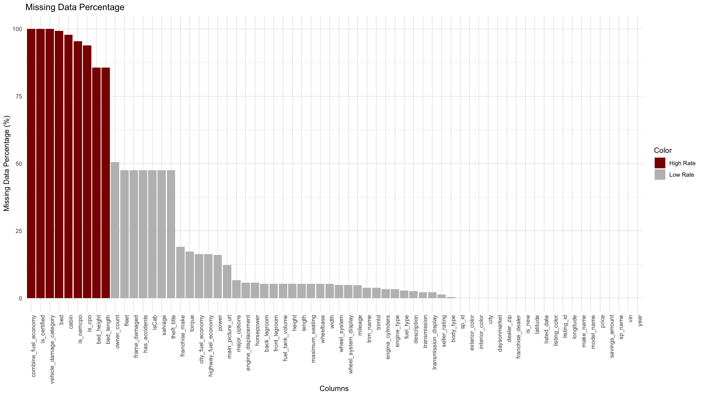In the graph above, the red-colored features all show a missing rate of over 70%. Columns with a high missingness rate are deleted because the overall impact of the data analysis is too negative to justify creating and populating new missing values.
In the graph above, features such as fleet, frame_damaged, and isCab also have a relatively high percentage of missing values. However, these features are essential information for this project. Therefore, they are required to handle missing values. However, these features are attributes with Boolean values of True or False. Consequently, all the missing values of these features are deleted because filling in the missing values of these attributes will cause biased results. Also, all the missing values of the other features are deleted because they are essential information about the vehicle. Below is the code to remove the missing values.
# Calculate the number of missing values for each column in the dataframe missing_count <- df_cleaned01 %>% summarise_all(~ sum(is.na(.))) # Calculate the percentage of missing values for each column missing_percent <- missing_count / nrow(df_cleaned01) * 100 # Find columns with more than 50% missing values columns_with_high_missing <- names(missing_percent)[missing_percent > 55] # Create a new dataframe with columns removed df_cleaned02 <- df_cleaned01 %>% select(-one_of(columns_with_high_missing)) # Print the columns removed cat("Columns removed due to more than 50% missing values:\n") cat(columns_with_high_missing, sep = ", ") # Print the structure of the new dataframe str(df_cleaned02) # Remove all rows containing NA values from the dataframe df_cleaned03 <- na.omit(df_cleaned02) | cs |
If you look at the dataset, you'll notice that the features that represent numbers, such as "length", "width", "legroom", and "maximum_seating", are defined as string types, such as "66.5 in", "68 in", and "58.1 in", rather than numeric types. To compare the data, these features should be defined as numeric, so the strings are converted to numeric by removing the strings that represent meaningless units. You need to check for non-numeric data when converting from a character type to a numeric type. If a numeric feature expresses a missing value with "-" as shown in the code below, it cannot be converted to a numeric type. Therefore, before converting the type, convert "-" to an NA value, convert the type to a numeric type, and fill in the missing value with the average values.
# length # Remove "in" and convert to numeric df_cleaned04$length <- sub(" in", "", df_cleaned04$length) df_cleaned04$length[df_cleaned04$length == "--"] <- NA df_cleaned04$length <- as.numeric(df_cleaned04$length) df_cleaned04$length[is.na(df_cleaned04$length)] <- mean(df_cleaned04$length, na.rm = TRUE) | cs |
Features that consist of True and False values, such as frame_damaged and fleet, are defined as string types in the raw data. There are several advantages to converting these features to Boolean types. Boolean types use less memory, which reduces the overall memory usage of the dataset and is faster to compute. Therefore, all the columns consisting of True and False in this dataset were converted from string type to Boolean type like below.
# Convert character columns to boolean type df_cleaned04$fleet <- as.logical(tolower(df_cleaned04$fleet)) df_cleaned04$frame_damaged <- as.logical(tolower(df_cleaned04$frame_damaged)) df_cleaned04$franchise_dealer <- as.logical(tolower(df_cleaned04$franchise_dealer)) df_cleaned04$has_accidents <- as.logical(tolower(df_cleaned04$has_accidents)) df_cleaned04$isCab <- as.logical(tolower(df_cleaned04$isCab)) df_cleaned04$is_new <- as.logical(tolower(df_cleaned04$is_new)) df_cleaned04$salvage <- as.logical(tolower(df_cleaned04$salvage)) df_cleaned04$theft_title <- as.logical(tolower(df_cleaned04$theft_title)) | cs |
For the 'listed_date' column, the date is stored as a string type. Converting it to a date type can be more beneficial for date operations and visualization analysis.
# Convert listed_date to Date data type df_cleaned04$listed_date <- as.Date(df_cleaned04$listed_date) | cs |
'fuel_type' is a feature that represents the type of fuel used by the vehicle, and the value is composed of five fuel types. By converting the class to a categorical value, you can save memory, compute faster, and sort comparisons between categories. In addition to 'fuel_type', 'wheel_system', 'body_type', 'franchise_make', and 'make_name' are also converted to categorical values.
# engine_type # Convert fuel_type to a factor (categorical variable) df_cleaned04$fuel_type <- as.factor(df_cleaned04$fuel_type) # wheel_system # Convert wheel_system to a factor (categorical variable) df_cleaned04$wheel_system <- as.factor(df_cleaned04$wheel_system) # body_type # Convert body_type to a factor (categorical variable) df_cleaned04$body_type <- as.factor(df_cleaned04$body_type) # franchise_make # Convert franchise_make to a factor (categorical variable) df_cleaned04$franchise_make <- as.factor(df_cleaned04$franchise_make) # make_name # Convert franchise_make to a factor (categorical variable) df_cleaned04$make_name <- as.factor(df_cleaned04$make_name) | cs |
Identify outliers in price, the dependent variable in this project. This dataset contains car information of various brands. This dataset includes a wide range of brands, from low-priced brands to supercar brands. Therefore, simply looking for outliers in the entire data will likely misrepresent meaningful data as outliers. Consequently, it makes more sense to look for outliers in price by make_name. The graph below shows a box plot of price by make_name. Because of the wide range of outliers, the y-axis is logarithmic to make the chart easier to understand.
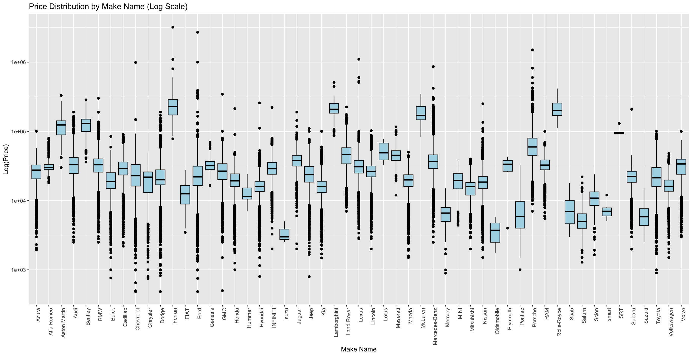The chart above shows many outliers in price for each make_name. In this project, the outliers identified in the graph above are removed. After removing the outliers and rechecking the box plot, it looks like the one below, except that the y-axis in the chart below is not logarithmic.
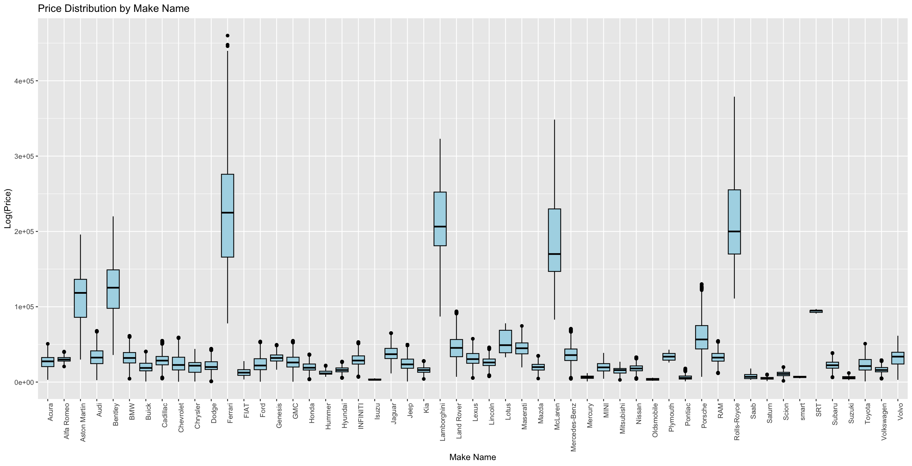'power' indicates a vehicle's performance and is defined as a string type. This feature is stored as a combination of two pieces of data, such as "177 hp @ 5,750 RPM". The 'hp' in front of this data stands for horsepower, a feature already existing in this dataset. Therefore, by extracting the values between this `@` and the RPM string, a new vehicle featur, RPM, is defined and assigned to the feature. Likewise, 'torque' is a combination of RPM and torque, so since RPM is a characteristic it already has, only the torque value is extracted and used.
# power # In power, horsepower already has a column, so only the rpm value is used here. # Create a new rpm column and delete the power field. df_cleaned04$rpm <- sub(".* @ ([0-9,]+) RPM", "\\1", df_cleaned04$power) df_cleaned04$rpm <- as.numeric(gsub(",", "", df_cleaned04$rpm)) df_cleaned04 <- df_cleaned04 %>% select(-power) | cs |
Join the zip code data collected by the USPS with the vehicle data. The "dealer_zip" in the vehicle data is a numeric type in the raw dataset, so any zeros in front of the zipcode will not match the zipcode format. For example, suppose you have a zip code of 00920. This data would be represented as 920, not 00920, in a column with a numeric type. For this reason, "dealer_zip" in the vehicle dataset is converted from numeric to alphanumeric and left-pad with "0" for less than five digits of data. Then, it is left-joined with the dataset collected from the USPS to get the state information. Rename the column with the added state information to 'state'.
# Zipcode and States # https://postalpro.usps.com/ZIP_Locale_Detail # Read the CSV file zip_csv <- 'ZIP_Locale_Detail.csv' df_zipcode<- read.csv(zip_csv) # Select and extract unique values from specific 2 columns in the data frame df_zipcode <- df_zipcode %>% distinct(DELIVERY.ZIPCODE, PHYSICAL.STATE) # Convert the 'PHYSICAL.ZIP' column to character type df_zipcode$DELIVERY.ZIPCODE <- as.character(df_zipcode$DELIVERY.ZIPCODE) # Pad the 'PHYSICAL.ZIP' column with leading zeros to make it 5 characters long df_zipcode$DELIVERY.ZIPCODE <- sprintf("%05s", df_zipcode$DELIVERY.ZIPCODE) # https://wisevoter.com/state-rankings/snowiest-states/ # Add state info df_cleaned05 <- df_cleaned04 %>% left_join(df_zipcode, by = c("dealer_zip" = "DELIVERY.ZIPCODE")) colnames(df_cleaned05)[colnames(df_cleaned05) == "PHYSICAL.STATE"] <- "state" dim(df_cleaned05) str(df_cleaned05) df_cleaned05[is.na(df_cleaned05$dealer_zip), ] df_cleaned05[df_cleaned05$dealer_zip == "", ] df_cleaned05[is.na(df_cleaned05$state), ] | cs |
This is what the final dataset looks like after data cleaning.
$ X.1 : int 1 2 3 4 5 6 7 8 9 10 ... $ X : int 39 41 42 46 48 50 52 54 55 56 ... $ vin : chr "1G1ZD5ST5JF222895" "JTHSZ5BC5J5008777" "1GNERFKW0JJ104068" "1GNKVGKD7HJ340326" ... $ back_legroom : num 38.1 27.3 38.4 36.8 38.6 39.4 34.1 38.6 38.4 39.5 ... $ body_type : Factor w/ 9 levels "Convertible",..: 6 2 7 7 7 7 2 7 7 7 ... $ city : chr "Bay Shore" "Bronx" "Bay Shore" "Bay Shore" ... $ city_fuel_economy : int 27 18 18 15 18 20 27 18 18 24 ... $ daysonmarket : int 55 36 27 27 24 20 102 35 41 246 ... $ dealer_zip : chr "11706" "10466" "11706" "11706" ... $ description : chr "Here at Atlantic Chevrolet-Cadillac, 90% of our pre-owned vehicles get brand new tires and brakes"| __truncated__ ... $ engine_cylinders : num 4 6 6 6 6 4 4 6 6 4 ... $ engine_displacement : int 1500 3500 3600 3600 3600 2400 2000 3000 3600 2000 ... $ exterior_color : chr "Silver Ice Metallic" "Black" "Silver Ice Metallic" "Silver Ice Metallic" ... $ fleet : logi TRUE FALSE FALSE FALSE FALSE FALSE ... $ frame_damaged : logi FALSE FALSE FALSE FALSE FALSE FALSE ... $ franchise_dealer : logi TRUE TRUE TRUE TRUE TRUE TRUE ... $ franchise_make : Factor w/ 45 levels "Acura","Alfa Romeo",..: 9 21 9 9 9 21 21 21 9 8 ... $ front_legroom : num 42 45.4 41 41.3 40.3 40.6 42.6 40.3 41 40.4 ... $ fuel_tank_volume : num 15.8 17.4 19.4 22 24.6 13.5 13.2 24.6 19.4 15.9 ... $ fuel_type : Factor w/ 6 levels "Biodiesel","Compressed Natural Gas",..: 5 5 5 5 5 5 5 5 5 5 ... $ has_accidents : logi FALSE FALSE FALSE TRUE FALSE FALSE ... $ height : num 57.6 55.1 70.7 69.9 69.3 65 55.1 69.3 70.7 64.1 ... $ highway_fuel_economy: int 36 24 27 22 25 25 34 25 27 30 ... $ horsepower : int 160 311 310 281 295 172 147 241 310 237 ... $ interior_color : chr "Jet Black" "Black" "Dark Atmosphere/Medium Ash Gray" "Dark Titanium/Light Titanium" ... $ isCab : logi TRUE FALSE FALSE FALSE FALSE FALSE ... $ is_new : logi FALSE FALSE FALSE FALSE FALSE FALSE ... $ latitude : num 40.7 40.9 40.7 40.7 40.7 ... $ length : num 194 185 204 204 190 ... $ listed_date : Date, format: "2020-07-16" "2020-08-04" "2020-08-13" "2020-08-13" ... $ listing_color : chr "SILVER" "BLACK" "SILVER" "SILVER" ... $ listing_id : int 276675304 278352194 279129180 279129181 279531621 279775073 272950938 278462572 277998707 262490501 ... $ longitude : num -73.3 -73.8 -73.3 -73.3 -73.3 ... $ main_picture_url : chr "https://static.cargurus.com/images/forsale/2020/08/20/17/03/2018_chevrolet_malibu-pic-68613528283" ... $ major_options : chr "['Driver Confidence Package', 'Power Package', 'Preferred Package', 'Technology Package', 'Premium Wheels', "... $ make_name : Factor w/ 53 levels "Acura","Alfa Romeo",..: 9 27 9 9 23 23 19 23 9 8 ... $ maximum_seating : num 5 4 8 8 5 5 4 5 8 5 ... $ mileage : num 42394 62251 36410 36055 25745 ... $ model_name : chr "Malibu" "RC 350" "Traverse" "Traverse" ... $ owner_count : int 1 1 1 1 1 1 1 1 1 1 ... $ price : num 14639 32000 23723 22422 29424 ... $ salvage : logi FALSE FALSE FALSE FALSE FALSE FALSE ... $ savings_amount : int 1749 1861 3500 2416 2254 1617 3866 4914 3353 5582 ... $ seller_rating : num 3.45 2.8 3.45 3.45 3.45 ... $ sp_id : int 314501 62178 314501 314501 314501 62178 62178 62178 314501 314501 ... $ sp_name : chr "Atlantic Chevrolet Cadillac" "Eastchester Chrysler Jeep Dodge Ram" "Atlantic Chevrolet Cadillac" "Atlantic Chevrolet Cadillac" ... $ theft_title : logi FALSE FALSE FALSE FALSE FALSE FALSE ... $ transmission : Factor w/ 4 levels "A","CVT","Dual Clutch",..: 1 1 1 1 1 1 1 1 1 1 ... $ trim_name : chr "LT FWD" "AWD" "LT Cloth FWD" "1LT AWD" ... $ wheel_system : Factor w/ 5 levels "4WD","4X2","AWD",..: 4 3 4 3 1 1 4 1 4 4 ... $ wheelbase : num 111 108 121 119 115 ... $ width : num 73 81.5 78.6 78.5 84.8 71.4 70.9 84.8 78.6 83.5 ... $ year : int 2018 2018 2018 2017 2018 2017 2020 2017 2018 2019 ... $ rpm : num 5700 6600 6800 6300 6400 6000 6200 5150 6800 5000 ... $ torque_lbft : num 184 280 266 266 260 165 132 390 266 258 ... $ is_luxury : logi FALSE FALSE FALSE FALSE FALSE FALSE ... $ state : chr "NY" "NY" "NY" "NY" ... | cs |
The code for all of the data cleaning processes can be found by clicking the button below, and is available on Github.
View Code
# Set the CSV file path csv_file_path <- "used_cars_data.csv" # Read the CSV file df <- read.csv(csv_file_path) # Print the data frame str(df) ################################################################################ # Cleaning ################################################################################ # 1. Duplicated values # Checking for duplicate rows duplicate_rows <- sum(duplicated(df)) cat("The number of duplicate rows are", duplicate_rows, ".\n") # Making a copy with the duplicated rows dropped df_cleaned <- df[!duplicated(df), ] dim(df_cleaned) # 2. Missing Values # Load the necessary library library(dplyr) # Identify character-type columns char_columns <- df_cleaned %>% select_if(is.character) # Create a new dataframe with empty strings replaced by missing values df_cleaned01 <- df_cleaned # Replace empty strings ("") with NA in the entire dataframe df_cleaned01[df_cleaned01 == ""] <- NA # Load the necessary libraries library(ggplot2) # Calculate the missing percentage for each column in the dataframe missing_percent <- colMeans(is.na(df_cleaned01)) * 100 # Create a dataframe missing_data <- data.frame(Column = names(df_cleaned01), MissingPercent = missing_percent) # Highlight columns with 50% or more missing data in red missing_data$Color <- ifelse(missing_data$MissingPercent > 55, "High Rate", "Low Rate") # Visualization: Horizontal bar chart ggplot(data = missing_data, aes(x = reorder(Column, -MissingPercent), y = MissingPercent, fill = Color)) + geom_bar(stat = "identity") + labs(title = "Missing Data Percentage", x = "Columns", y = "Missing Data Percentage (%)") + theme_minimal() + theme(axis.text.x = element_text(angle = 90, hjust = 1)) + scale_fill_manual(values = c("Low Rate" = "gray", "High Rate" = "darkred")) # Calculate the number of missing values for each column in the dataframe missing_count <- df_cleaned01 %>% summarise_all(~ sum(is.na(.))) # Calculate the percentage of missing values for each column missing_percent <- missing_count / nrow(df_cleaned01) * 100 # Find columns with more than 50% missing values columns_with_high_missing <- names(missing_percent)[missing_percent > 55] # Create a new dataframe with columns removed df_cleaned02 <- df_cleaned01 %>% select(-one_of(columns_with_high_missing)) # Print the columns removed cat("Columns removed due to more than 50% missing values:\n") cat(columns_with_high_missing, sep = ", ") # Print the structure of the new dataframe str(df_cleaned02) # Remove all rows containing NA values from the dataframe df_cleaned03 <- na.omit(df_cleaned02) # Delete "main_picture_url" column df_cleaned03 <- df_cleaned03 %>% select(-main_picture_url) # Delete "description" column df_cleaned03 <- df_cleaned03 %>% select(-description) # Print the cleaned dataframe print(df_cleaned03) # Calculate the number of missing values for each column missing_count <- df_cleaned03 %>% summarise_all(~ sum(is.na(.))) # Print the result print(missing_count) head(df_cleaned03) write.csv(df_cleaned03, file = "used_cars_data_cleaned01.csv", row.names = TRUE) str(df_cleaned03) unique_values <- df_cleaned03 %>% summarise( fleet = paste(unique(fleet), collapse = ", "), frame_damaged = paste(unique(frame_damaged), collapse = ", "), franchise_dealer = paste(unique(franchise_dealer), collapse = ", "), has_accidents = paste(unique(has_accidents), collapse = ", "), isCab = paste(unique(isCab), collapse = ", "), is_new = paste(unique(is_new), collapse = ", "), salvage = paste(unique(salvage), collapse = ", "), theft_title = paste(unique(theft_title), collapse = ", ") ) print(unique_values) # Convert a column consisting of “True” and “False” values to character type to Boolean type. df_cleaned04 <- df_cleaned03 str(df_cleaned04) # back_legroom # Remove "in" and convert to numeric df_cleaned04$back_legroom <- sub(" in", "", df_cleaned04$back_legroom) # If there is "--" among the column values, replace it with null and fill it with the average value. df_cleaned04$back_legroom[df_cleaned04$back_legroom == "--"] <- NA df_cleaned04$back_legroom <- as.numeric(df_cleaned04$back_legroom) df_cleaned04$back_legroom[is.na(df_cleaned04$back_legroom)] <- mean(df_cleaned04$back_legroom, na.rm = TRUE) # engine_cylinders # Convert to the number of vehicle cylinders. unique(df_cleaned04$engine_cylinders ) # Split the engine_cylinders column by space and extract the first element df_cleaned04$engine_cylinders <- sapply(strsplit(df_cleaned04$engine_cylinders, " "), function(x) as.numeric(gsub("[^0-9]", "", x[1]))) df_cleaned04$engine_cylinders <- as.numeric(df_cleaned04$engine_cylinders) # front_legroom # Remove "in" and convert to numeric df_cleaned04$front_legroom <- sub(" in", "", df_cleaned04$front_legroom) # If there is "--" among the column values, replace it with null and fill it with the average value. df_cleaned04$front_legroom[df_cleaned04$front_legroom == "--"] <- NA df_cleaned04$front_legroom <- as.numeric(df_cleaned04$front_legroom) df_cleaned04$front_legroom[is.na(df_cleaned04$front_legroom)] <- mean(df_cleaned04$front_legroom, na.rm = TRUE) # fuel_tank_volume # Remove "gal" and convert to numeric df_cleaned04$fuel_tank_volume <- sub(" gal", "", df_cleaned04$fuel_tank_volume) df_cleaned04$fuel_tank_volume[df_cleaned04$fuel_tank_volume == "--"] <- NA df_cleaned04$fuel_tank_volume <- as.numeric(df_cleaned04$fuel_tank_volume) df_cleaned04$fuel_tank_volume[is.na(df_cleaned04$fuel_tank_volume)] <- mean(df_cleaned04$fuel_tank_volume, na.rm = TRUE) # engine_type # engine_type is replaced by engine_cylinders and fuel_type. The engine_type column is deleted. df_cleaned04 <- df_cleaned04 %>% select(-engine_type) # fuel_type # Convert fuel_type to a factor (categorical variable) df_cleaned04$fuel_type <- as.factor(df_cleaned04$fuel_type) # Convert character columns to boolean type df_cleaned04$fleet <- as.logical(tolower(df_cleaned04$fleet)) df_cleaned04$frame_damaged <- as.logical(tolower(df_cleaned04$frame_damaged)) df_cleaned04$franchise_dealer <- as.logical(tolower(df_cleaned04$franchise_dealer)) df_cleaned04$has_accidents <- as.logical(tolower(df_cleaned04$has_accidents)) df_cleaned04$isCab <- as.logical(tolower(df_cleaned04$isCab)) df_cleaned04$is_new <- as.logical(tolower(df_cleaned04$is_new)) df_cleaned04$salvage <- as.logical(tolower(df_cleaned04$salvage)) df_cleaned04$theft_title <- as.logical(tolower(df_cleaned04$theft_title)) str(df_cleaned04) # height # Remove "in" and convert to numeric df_cleaned04$height <- sub(" in", "", df_cleaned04$height) df_cleaned04$height[df_cleaned04$height == "--"] <- NA df_cleaned04$height <- as.numeric(df_cleaned04$height) df_cleaned04$height[is.na(df_cleaned04$height)] <- mean(df_cleaned04$height, na.rm = TRUE) # listed_date # Convert listed_date to Date data type df_cleaned04$listed_date <- as.Date(df_cleaned04$listed_date) # major_options # Delete major_options # df_cleaned04 <- df_cleaned04 %>% select(-major_options) # maximum_seating # Remove "in" and convert to numeric df_cleaned04$maximum_seating <- sub(" seats", "", df_cleaned04$maximum_seating) df_cleaned04$maximum_seating[df_cleaned04$maximum_seating == "--"] <- NA df_cleaned04$maximum_seating <- as.numeric(df_cleaned04$maximum_seating) df_cleaned04$maximum_seating[is.na(df_cleaned04$maximum_seating)] <- mean(df_cleaned04$maximum_seating, na.rm = TRUE) # power # In power, horsepower already has a column, so only the rpm value is used here. # Create a new rpm column and delete the power field. df_cleaned04$rpm <- sub(".* @ ([0-9,]+) RPM", "\\1", df_cleaned04$power) df_cleaned04$rpm <- as.numeric(gsub(",", "", df_cleaned04$rpm)) df_cleaned04 <- df_cleaned04 %>% select(-power) # length # Remove "in" and convert to numeric df_cleaned04$length <- sub(" in", "", df_cleaned04$length) df_cleaned04$length[df_cleaned04$length == "--"] <- NA df_cleaned04$length <- as.numeric(df_cleaned04$length) df_cleaned04$length[is.na(df_cleaned04$length)] <- mean(df_cleaned04$length, na.rm = TRUE) # torque_lbft df_cleaned04$torque_lbft <- as.numeric(sub(" lb-ft .*", "", df_cleaned04$torque)) df_cleaned04 <- df_cleaned04 %>% select(-torque) unique(df_cleaned04$wheel_system) # transmission # Convert transmission to a factor (categorical variable) df_cleaned04$transmission <- as.factor(df_cleaned04$transmission) # transmission_display # Transmission_display is replaced by transmission, so delete transmission_display df_cleaned04 <- df_cleaned04 %>% select(-transmission_display) # trimId # Deleted df_cleaned04 <- df_cleaned04 %>% select(-trimId) # wheel_system # Convert wheel_system to a factor (categorical variable) df_cleaned04$wheel_system <- as.factor(df_cleaned04$wheel_system) # wheel_system_display # wheel_system_display is replaced by wheel_system, so delete wheel_system_display df_cleaned04 <- df_cleaned04 %>% select(-wheel_system_display) # wheelbase # Remove "in" and convert to numeric df_cleaned04$wheelbase <- sub(" in", "", df_cleaned04$wheelbase) df_cleaned04$wheelbase[df_cleaned04$wheelbase == "--"] <- NA df_cleaned04$wheelbase <- as.numeric(df_cleaned04$wheelbase) df_cleaned04$wheelbase[is.na(df_cleaned04$wheelbase)] <- mean(df_cleaned04$wheelbase, na.rm = TRUE) # width # Remove "in" and convert to numeric df_cleaned04$width <- sub(" in", "", df_cleaned04$width) df_cleaned04$width[df_cleaned04$width == "--"] <- NA df_cleaned04$width <- as.numeric(df_cleaned04$width) df_cleaned04$width[is.na(df_cleaned04$width)] <- mean(df_cleaned04$width, na.rm = TRUE) # Zipcode and States # https://postalpro.usps.com/ZIP_Locale_Detail # Read the CSV file zip_csv <- 'ZIP_Locale_Detail.csv' df_zipcode<- read.csv(zip_csv) # Select and extract unique values from specific 2 columns in the data frame df_zipcode <- df_zipcode %>% distinct(DELIVERY.ZIPCODE, PHYSICAL.STATE) # Convert the 'PHYSICAL.ZIP' column to character type df_zipcode$DELIVERY.ZIPCODE <- as.character(df_zipcode$DELIVERY.ZIPCODE) # Pad the 'PHYSICAL.ZIP' column with leading zeros to make it 5 characters long df_zipcode$DELIVERY.ZIPCODE <- sprintf("%05s", df_zipcode$DELIVERY.ZIPCODE) # https://wisevoter.com/state-rankings/snowiest-states/ # Add state info df_cleaned05 <- df_cleaned04 %>% left_join(df_zipcode, by = c("dealer_zip" = "DELIVERY.ZIPCODE")) colnames(df_cleaned05)[colnames(df_cleaned05) == "PHYSICAL.STATE"] <- "state" dim(df_cleaned05) str(df_cleaned05) df_cleaned05[is.na(df_cleaned05$dealer_zip), ] df_cleaned05[df_cleaned05$dealer_zip == "", ] df_cleaned05[is.na(df_cleaned05$state), ] # Check the number of missing values in state sum(is.na(df_cleaned05$state)) write.csv(df_cleaned05, file = "used_cars_data_cleaned_final.csv", row.names = TRUE) ################################################################################ # <Preprocessing> ################################################################################ df_cleaned_final <- df_cleaned05 # 1 Visualize data counts by US state # Load the packages # Calculate the number of rows per state in the dataframe state_counts <- df_cleaned_final %>% group_by(state) %>% summarise(row_count = n()) %>% arrange(desc(row_count)) # draw plot ggplot(state_counts, aes(x = reorder(state, -row_count), y = row_count, fill = state)) + geom_bar(stat = "identity") + labs(title = "Number of Used Cars per State", x = "State", y = "Used Cars") + theme_minimal() + theme(axis.text.x = element_text(angle = 90, hjust = 1), legend.position = "none") + scale_fill_manual(values = rep("#77AADD", nrow(state_counts))) | cs |
First, let's discuss the individual variables that can be explored. Price is the dependent variable in this project and is one of the most essential features. Let's look at the distribution of 'price'.
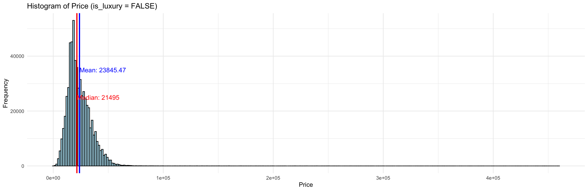In the graph above, price has a normal distribution that is heavily skewed to the left. This skew can be attributed to the properties of the vehicle. This dataset also includes data from high-performance cars. High-performance vehicles are usually much more expensive than standard vehicles, and this price difference has caused a significant bias in the normal distribution. In the previous data cleaning, high-performance cars as a feature called is_luxury were added, so plotting a histogram of 'price' by this feature separately should reduce the bias in the normal distribution. The graph below shows the histogram of 'price' separately for regular and high-performance vehicles.
As mentioned earlier, the prices of regular vehicles are normally distributed, and the prices of high-performance cars are also less skewed than in the previous histogram.
>According to the plot below, Ford has the most used vehicles, followed by Chevrolet, Honda, Nissan, and Toyota. It suggests that American and Japanese brands largely dominate the used car market.
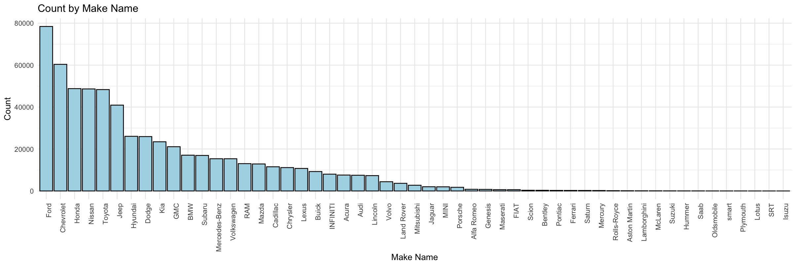
The above histogram of mileage shows normally distributed. As you can see in the graph above, the average mileage of vehicles listed for sale is between 30,000 and 40,000. The distribution is skewed to the right, meaning that most listings are for cars with low mileage.
In the graph below, you can easily see the main characteristics of the vehicles, such as transmission, fuel type, wheel system, and body type. First, you can see that most vehicles have automatic transmissions, and most fuel types are gasoline. If you look at the wheel system, most of them are FWD, but if you compare them to other vehicle attributes, you can see that they are relatively balanced for each attribute. Finally, the most common body type is SUV/Crossover, Sedan, followed by Pickup Truck.
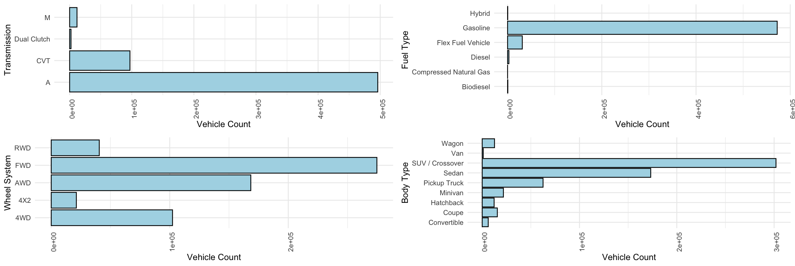The graph on the left below shows the distribution of prices by vehicle body type, as well as information on the average and median prices. You can see that Coupe and Convertible are relatively more expensive, while Hatchback, Sedan, and Wagon are somewhat less expensive. If you look at the right end of the boxplot, you can see that there are outliers in a few body types. It indicates that there is data from more expensive vehicles in these body types, and the reason for this can be found in the high-performance cars. The graph on the right below shows the frequency of each body type by whether the vehicle is a high-performance vehicle or not. Looking at the bottom of the chart, the high-performance vehicle data is present in the Convertible, Coupe, Hatchback, Sedan, and SUV/Crossover body types. It means that the outliers (right) in the boxplot below are high-performance vehicles, and it can be inferred that the average vehicle price of these body types is relatively high due to this data.
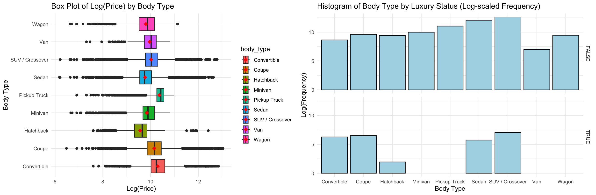The two graphs above show how many cars are for sale in each state and how many are in each city based on the dealership's location. The first graph by state shows that Texas, California, and Florida have the most cars for sale. These are three of the most populous states in the U.S., and they're generally not cold enough to see much snow. In the second graph by city, you can see that the vehicle data is centered around large, populated cities, which means that the primary buyers of vehicles for sale are urban dwellers, which suggests that people who live in the city rather than the suburbs may be the primary target audience.
The correlation chart above provides essential insights into the relationship between the variables. The correlation coefficient between 'city_fuel_economy' and 'highway_fuel_economy' is relatively high, suggesting that higher city fuel economy tends to be associated with higher highway fuel economy. In contrast, the correlation coefficient between 'engine_cylinders' and 'city_fuel_economy' is very low, suggesting that as the number of cylinders in an engine increases, city fuel economy tends to decrease. And 'frame_damaged' has a low correlation with most other variables, indicating that frame damage may not significantly affect other vehicle attributes in this dataset. In addition, 'is_new' (indicating whether the car is new) has a relatively low correlation with most of the other variables, suggesting that whether the car is new may not depend much on the other vehicle attributes in this data set.
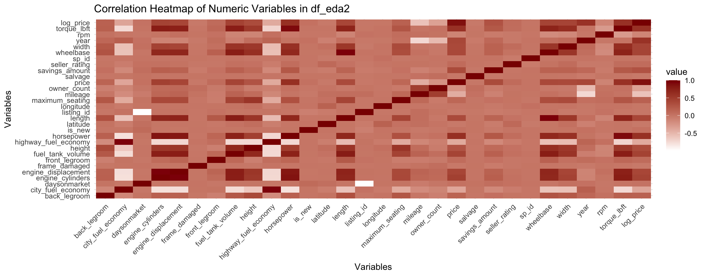Since the scale of vehicle prices is relatively large, logarithms are applied to emphasize the price characteristics. The graph below shows a scatter plot and a regression line to check for a linear relationship between mileage and logarithmic vehicle price. There is a somewhat linear relationship between mileage and log(price), as the regression line indicates a linear relationship. It shows that the log(price) decreases constantly as mileage increases. The negative slope of the regression line means that the price of the vehicle (log(price)) decreases as the mileage increases, suggesting that, in general, for used cars, the price tends to decrease as the mileage increases. In fact, the low slope of the regression line in the relationship between log(price) and mileage means that the change in log (price) is relatively small as mileage increases. In other words, a small increase in mileage may not significantly impact the price.
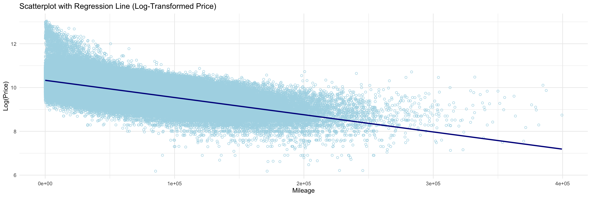The general idea is that the older a car is, the higher its depreciation rate and the lower its price. However, contrary to this expectation, the scatterplot below shows that vintage car costs increase. The graph below uses the year 2000 as an arbitrary reference point and defines a feature called is_old, which determines whether a car is older than 2000 and plots it in a scatter plot. For vehicles before 2000, the trend is that the older the car, the more expensive it is, and for cars after 2000, as expected, the price trend increases with age. While this may seem unreasonable, It can be inferred that vehicles produced before 2000 are becoming more expensive due to the value of their rarity.
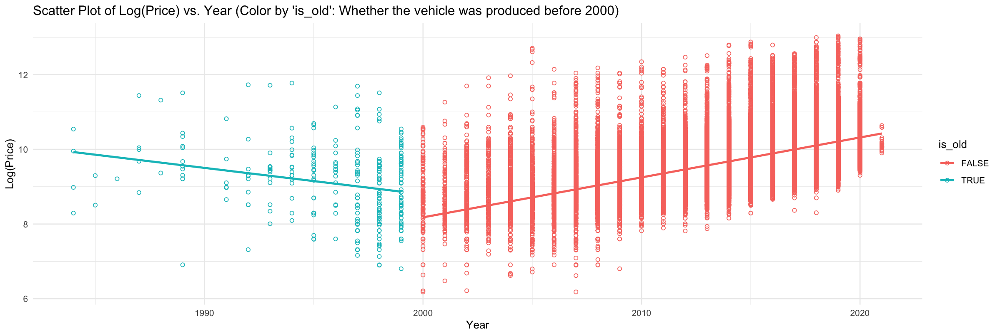Vehicles with a frame damaged or salvage status represent vehicles that have been restored or require repair due to an accident or damage. In the two graphs above, you can easily see that vehicles with both frame damaged and salvage histories have lower prices when compared to the average price of vehicles without them. Vehicles with frame damage or salvage conditions are more likely to incur additional repair and maintenance costs due to safety and performance issues. Hence, the price of vehicles with these conditions is lower. These are attributes that affect the price of a vehicle.
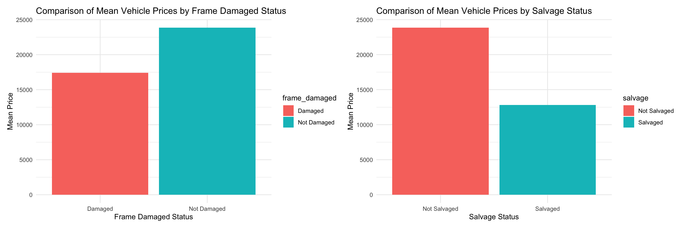Vehicles with a fleet history have been sold in bulk at one time to entities such as government offices and businesses, rental car companies, and used car dealerships and can generally be had for less on the used car market. Although a dramatic price difference wasn't observed with or without this attribute, it can be one of the factors to consider when making a vehicle purchase decision. Next, Taxi vehicles typically have higher mileage and may have a lower average price due to their commercial use. It also leads to a similar difference in average price as Fleet. Finally, vehicles less than two years old tend to have a significantly higher average price than vehicles more than two years old. These vehicles are much newer technologically and have low or no mileage. In other words, the vehicle's age can significantly impact the price of a used car, making it one of the most important factors when purchasing a vehicle.
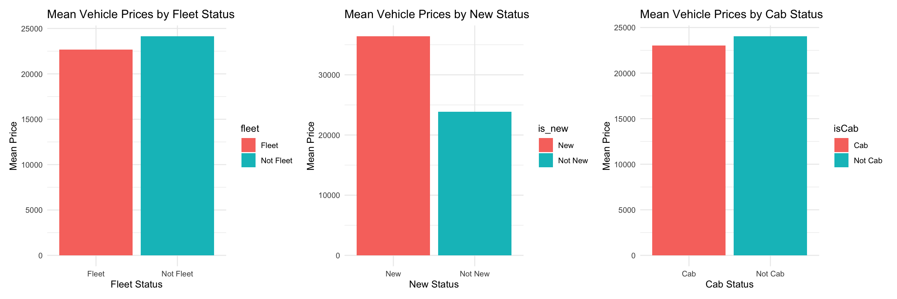The two graphs on the left below both show a decreasing trend in vehicle price (log) as city and highway fuel economy increases. However, the third graph shows that the higher the horsepower, the higher the price. Generally, a higher horsepower consumes more fuel and creates more drag by exerting more force. Not only that, but the engine also becomes larger and heavier to produce more power. For these reasons, fuel economy and horsepower are inversely proportional. The fourth heatmap shows the correlation between each attribute: fuel economy, horsepower, and price. You can see that price and horsepower are positively correlated, fuel efficiency and horsepower are strongly negatively correlated, and price and fuel efficiency are weakly negatively correlated.
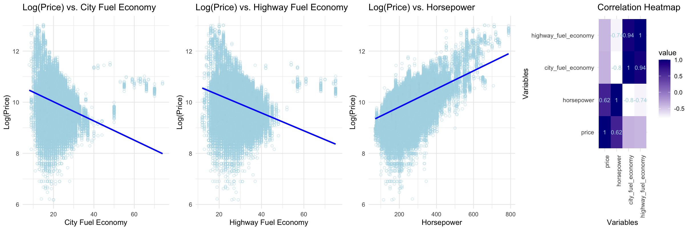The graph on the left below shows that the more previous owners a vehicle has, the lower its price. It can be inferred from the fact that the more previous owners a car has, the more times it has been driven, which means that the more times it has been driven, the higher its mileage is. The graph on the right below shows the relationship between the number of previous vehicle owners and their mileage. The more previous vehicle owners have, the higher its mileage tends to be. Earlier, the relationship between price and mileage was discussed, and it was already mentioned that the higher the mileage, the lower the price tends to be. So, from the graph below, it can be observed that the higher the number of previous vehicle owners, the lower the price tends to be.
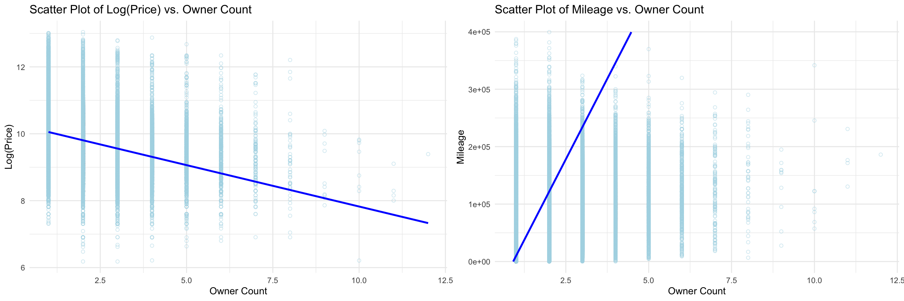The code for all of the data cleaning processes can be found by clicking the button below, and is available on Github.
################################################################################ # <EDA> ################################################################################ df_eda <- df_cleaned05 str(df_eda) # Price # Load the ggplot2 library library(ggplot2) # Calculate median and mean of 'price' column median_price <- median(df_eda$price) mean_price <- mean(df_eda$price) # Create a histogram of 'price' with median and mean annotations ggplot(df_eda, aes(x = price)) + geom_histogram(fill = "lightblue", color = "black", bins = 300) + geom_vline(xintercept = median_price, color = "red", linetype = "solid", size = 1) + # Vertical line for median geom_vline(xintercept = mean_price, color = "blue", linetype = "solid", size = 1) + # Vertical line for mean annotate("text", x = median_price, y = 25000, label = paste("Median:", round(median_price, 2)), color = "red", size = 4, hjust = 0) + annotate("text", x = mean_price, y = 35000, label = paste("Mean:", round(mean_price, 2)), color = "blue", size = 4, hjust = 0) + labs(x = "Price", y = "Frequency", title = "Histogram of Price") + theme_minimal() # Filter the data where 'is_luxury' is FALSE df_filtered <- df_eda[df_eda$is_luxury == FALSE,] df_filtered2 <- df_eda[df_eda$is_luxury == TRUE,] # Calculate median and mean of 'price' column median_price <- median(df_filtered$price) mean_price <- mean(df_filtered$price) # Create a histogram of 'price' with median and mean annotations ggplot(df_filtered, aes(x = price)) + geom_histogram(fill = "lightblue", color = "black", bins = 100) + geom_vline(xintercept = median_price, color = "red", linetype = "solid", size = 1) + # Vertical line for median geom_vline(xintercept = mean_price, color = "blue", linetype = "solid", size = 1) + # Vertical line for mean annotate("text", x = median_price, y = 25000, label = paste("Median:", round(median_price, 2)), color = "red", size = 4, hjust = 0) + annotate("text", x = mean_price, y = 35000, label = paste("Mean:", round(mean_price, 2)), color = "blue", size = 4, hjust = 0) + labs(x = "Price", y = "Frequency", title = "Histogram of Price (is_luxury = FALSE)") + theme_minimal() # Calculate median and mean of 'price' column median_price <- median(df_filtered2$price) mean_price <- mean(df_filtered2$price) # Create a histogram of 'price' with median and mean annotations ggplot(df_filtered2, aes(x = price)) + geom_histogram(fill = "lightblue", color = "black", bins = 100) + geom_vline(xintercept = median_price, color = "red", linetype = "solid", size = 1) + # Vertical line for median geom_vline(xintercept = mean_price, color = "blue", linetype = "solid", size = 1) + # Vertical line for mean annotate("text", x = median_price, y = 150, label = paste("Median:", round(median_price, 2)), color = "red", size = 4, hjust = 0) + annotate("text", x = mean_price, y = 100, label = paste("Mean:", round(mean_price, 2)), color = "blue", size = 4, hjust = 0) + labs(x = "Price", y = "Frequency", title = "Histogram of Price (is_luxury = TRUE)") + theme_minimal() # make name # Group the data by 'make_name' and calculate the number of rows in each group make_count <- df_eda %>% group_by(make_name) %>% summarise(row_count = n()) # Create a bar plot to visualize the number of rows for each 'make_name' ggplot(make_count, aes(x = reorder(make_name, -row_count), y = row_count)) + geom_bar(stat = "identity", fill = "lightblue", color = "black") + labs(x = "Make Name", y = "Count", title = "Count by Make Name") + theme_minimal() + theme(axis.text.x = element_text(angle = 90, hjust = 1)) # Rotate x-axis labels for better readability # make name # Group the data by 'make_name' and calculate the number of rows in each group make_count <- df_eda %>% group_by(make_name) %>% summarise(row_count = n()) # Create a bar plot to visualize the number of rows for each 'make_name' ggplot(make_count, aes(x = reorder(make_name, -row_count), y = row_count)) + geom_bar(stat = "identity", fill = "lightblue", color = "black") + labs(x = "Make Name", y = "Count", title = "Count by Make Name") + theme_minimal() + theme(axis.text.x = element_text(angle = 90, hjust = 1)) # Rotate x-axis labels for better readability #mileage # Calculate median and mean of 'mileage' column median_mileage <- median(df_eda$mileage) mean_mileage <- mean(df_eda$mileage) # Create a histogram of 'mileage' with median and mean annotations ggplot(df_eda, aes(x = mileage)) + geom_histogram(fill = "lightblue", color = "black", bins = 100) + geom_vline(xintercept = median_mileage, color = "red", linetype = "solid", size = 1) + # Vertical line for median geom_vline(xintercept = mean_mileage, color = "blue", linetype = "solid", size = 1) + # Vertical line for mean annotate("text", x = median_mileage, y = 25000, label = paste("Median:", round(median_mileage, 2)), color = "red", size = 4, hjust = 0) + annotate("text", x = mean_mileage, y = 35000, label = paste("Mean:", round(mean_mileage, 2)), color = "blue", size = 4, hjust = 0) + labs(x = "Price", y = "Frequency", title = "Histogram of Mileage") + theme_minimal() # Create a bar plot of vehicle counts by 'transmission' ggplot(df_eda, aes(x = transmission)) + geom_bar(fill = "lightblue") + labs( x = "Transmission", y = "Vehicle Count", title = "Vehicle Count by Transmission" ) + theme_minimal() + theme(axis.text.x = element_text(angle = 45, hjust = 1)) # Create a bar plot of vehicle counts by 'fuel_type' ggplot(df_eda, aes(x = fuel_type)) + geom_bar(fill = "lightblue") + labs( x = "Fuel Type", y = "Vehicle Count", title = "Vehicle Count by Fuel Type" ) + theme_minimal() + theme(axis.text.x = element_text(angle = 45, hjust = 1)) # Load the ggplot2 library library(ggplot2) # Create a bar plot of vehicle counts by 'wheel_system' ggplot(df_eda, aes(x = wheel_system)) + geom_bar(fill = "lightblue") + labs( x = "Wheel System", y = "Vehicle Count", title = "Vehicle Count by Wheel System" ) + theme_minimal() + theme(axis.text.x = element_text(angle = 45, hjust = 1)) # Load the ggplot2 library library(ggplot2) # Create a bar plot of vehicle counts by 'body_type' ggplot(df_eda, aes(x = body_type)) + geom_bar(fill = "lightblue") + labs( x = "Body Type", y = "Vehicle Count", title = "Vehicle Count by Body Type" ) + theme_minimal() + theme(axis.text.x = element_text(angle = 45, hjust = 1)) # Load the required libraries library(ggplot2) library(gridExtra) # Create individual bar plots plot1 <- ggplot(df_eda, aes(x = transmission)) + geom_bar(fill = "lightblue", color='black') + labs(x = "Transmission", y = "Vehicle Count") + theme_minimal() + theme(axis.text.x = element_text(angle = 90, hjust = 1))+ coord_flip() plot2 <- ggplot(df_eda, aes(x = fuel_type)) + geom_bar(fill = "lightblue", color='black') + labs(x = "Fuel Type", y = "Vehicle Count") + theme_minimal() + theme(axis.text.x = element_text(angle = 90, hjust = 1))+ coord_flip() plot3 <- ggplot(df_eda, aes(x = wheel_system)) + geom_bar(fill = "lightblue", color='black') + labs(x = "Wheel System", y = "Vehicle Count") + theme_minimal() + theme(axis.text.x = element_text(angle = 90, hjust = 1))+ coord_flip() plot4 <- ggplot(df_eda, aes(x = body_type)) + geom_bar(fill = "lightblue", color='black') + labs(x = "Body Type", y = "Vehicle Count") + theme_minimal() + theme(axis.text.x = element_text(angle = 90, hjust = 1))+ coord_flip() # Combine the plots into a grid grid.arrange(plot1, plot2, plot3, plot4, ncol = 2) library(maps) # Calculate the frequencies of each state in the dataframe state_counts <- table(df_eda$state) # Load the U.S. map data us_map <- map_data("state") # Merge the U.S. map data with the frequency information state_abbreviations <- c( "alabama" = "AL", "alaska" = "AK", "arizona" = "AZ", "arkansas" = "AR", "california" = "CA", "colorado" = "CO", "connecticut" = "CT", "delaware" = "DE", "florida" = "FL", "georgia" = "GA", "hawaii" = "HI", "idaho" = "ID", "illinois" = "IL", "indiana" = "IN", "iowa" = "IA", "kansas" = "KS", "kentucky" = "KY", "louisiana" = "LA", "maine" = "ME", "maryland" = "MD", "massachusetts" = "MA", "michigan" = "MI", "minnesota" = "MN", "mississippi" = "MS", "missouri" = "MO", "montana" = "MT", "nebraska" = "NE", "nevada" = "NV", "new hampshire" = "NH", "new jersey" = "NJ", "new mexico" = "NM", "new york" = "NY", "north carolina" = "NC", "north dakota" = "ND", "ohio" = "OH", "oklahoma" = "OK", "oregon" = "OR", "pennsylvania" = "PA", "rhode island" = "RI", "south carolina" = "SC", "south dakota" = "SD", "tennessee" = "TN", "texas" = "TX", "utah" = "UT", "vermont" = "VT", "virginia" = "VA", "washington" = "WA", "west virginia" = "WV", "wisconsin" = "WI", "wyoming" = "WY" ) # Update the 'region' column with uppercase abbreviations us_map$region <- state_abbreviations[us_map$region] us_map <- merge(us_map, state_counts, by.x = "region", by.y = "Var1", all.x = TRUE) us_map <- us_map %>% select(-Freq.x) %>% # Remove the Freq.x column rename(Freq = Freq.y) # Rename Freq.y to Freq # Create the visualization ggplot(us_map, aes(x = long, y = lat, group = group, fill = Freq)) + geom_polygon() + scale_fill_gradient(low = "white", high = "darkblue") + labs(title = "Number of used cars for sale by U.S. state") + theme_void() + coord_fixed(ratio = 1.25) # Fix the aspect ratio of the plot # Calculate the counts of each state state_counts <- table(df_eda$state) # Create a dataframe from the state_counts table state_counts_df <- as.data.frame(state_counts) names(state_counts_df) <- c("State", "Frequency") # Create a bar plot with reversed order ggplot(state_counts_df, aes(x = reorder(State, -Frequency), y = Frequency)) + geom_bar(stat = "identity", fill = "lightblue", color = "black") + labs(x = "State", y = "Frequency", title = "Number of Used Car by State") + theme_minimal() + theme(axis.text.x = element_text(angle = 90, hjust = 1)) # Calculate the counts of each state city_counts <- table(df_eda$city) # Create a dataframe from the city_counts table city_counts_df <- as.data.frame(city_counts) names(city_counts_df) <- c("City", "Frequency") # Get the top 50 cities by frequency top_50_cities <- head(city_counts_df[order(-city_counts_df$Frequency), ], 50) # Create a bar plot with reversed order for the top 50 cities ggplot(top_50_cities, aes(x = reorder(City, -Frequency), y = Frequency)) + geom_bar(stat = "identity", fill = "lightblue", color = "black") + labs(x = "City", y = "Frequency", title = "Number of Used Cars by City (Top 50)") + theme_minimal() + theme(axis.text.x = element_text(angle = 90, hjust = 1)) # Apply logarithm to 'price' df_eda$log_price <- log(df_eda$price) # Create a scatterplot with a regression line scatterplot <- ggplot(df_eda, aes(x = mileage, y = log_price)) + geom_point(color = "lightblue", shape = 21) + geom_smooth(method = "lm", formula = y ~ x, color = "darkblue") + labs(x = "Mileage", y = "Log(Price)", title = "Scatterplot with Regression Line (Log-Transformed Price)") + theme_minimal() # Display the scatterplot with regression line scatterplot library(reshape2) # Convert boolean columns in df_eda to numeric in df_eda2 df_eda2 <- df_eda # Remove 'X' and 'X.1' columns from df_eda2 df_eda2 <- df_eda2[, !(names(df_eda2) %in% c('X', 'X.1'))] df_eda2$frame_damaged <- as.numeric(df_eda2$frame_damaged) df_eda2$salvage <- as.numeric(df_eda2$salvage) df_eda2$is_new <- as.numeric(df_eda2$is_new) df_eda2$is_cab <- as.numeric(df_eda2$is_cab) df_eda2$fleet <- as.numeric(df_eda2$fleet) # Calculate the correlation matrix between numeric variables correlation_matrix <- cor(df_eda2[, sapply(df_eda2, is.numeric)]) # Create a correlation matrix in a long format correlation_df <- melt(correlation_matrix) # Create a heatmap plot for the correlation matrix ggplot(correlation_df, aes(Var1, Var2, fill = value)) + geom_tile() + scale_fill_gradient(low = "white", high = "darkred") + labs(title = "Correlation Heatmap", x = "Variables", y = "Variables") + theme_minimal() + theme(axis.text.x = element_text(angle = 45, hjust = 1)) # Log transform the price variable df_eda$log_price <- log(df_eda$price) # Create a box plot comparing log-transformed vehicle prices by frame_damaged status ggplot(df_eda, aes(x = frame_damaged, y = log_price, fill = frame_damaged)) + geom_boxplot() + labs(x = "Frame Damaged", y = "Log(Price)", title = "Comparison of Log-Transformed Vehicle Prices by Frame Damaged Status") + theme_minimal() # Create a box plot comparing log-transformed vehicle prices by frame_damaged status ggplot(df_eda, aes(x = salvage, y = log_price, fill = salvage)) + geom_boxplot() + labs(x = "Salvage", y = "Log(Price)", title = "Comparison of Log-Transformed Vehicle Prices by Salvage Status") + theme_minimal() # Create a bar plot comparing the mean prices for frame_damaged groups (without log transformation) df_eda %>% mutate(frame_damaged = ifelse(frame_damaged, "Damaged", "Not Damaged")) %>% ggplot(aes(x = frame_damaged, y = price, fill = frame_damaged)) + geom_bar(stat = "summary", fun = "mean") + labs(x = "Frame Damaged Status", y = "Mean Price", title = "Comparison of Mean Vehicle Prices by Frame Damaged Status") + theme_minimal() # Create a bar plot comparing the mean prices for frame_damaged groups (without log transformation) df_eda %>% mutate(salvage = ifelse(salvage, "Salvaged", "Not Salvaged")) %>% ggplot(aes(x = salvage, y = price, fill = salvage)) + geom_bar(stat = "summary", fun = "mean") + labs(x = "Salvage Status", y = "Mean Price", title = "Comparison of Mean Vehicle Prices by Salvage Status") + theme_minimal() library(patchwork) # Create a bar plot comparing the mean prices for frame_damaged groups (without log transformation) plot1 <- df_eda %>% mutate(frame_damaged = ifelse(frame_damaged, "Damaged", "Not Damaged")) %>% ggplot(aes(x = frame_damaged, y = price, fill = frame_damaged)) + geom_bar(stat = "summary", fun = "mean") + labs(x = "Frame Damaged Status", y = "Mean Price", title = "Comparison of Mean Vehicle Prices by Frame Damaged Status") + theme_minimal() # Create a bar plot comparing the mean prices for salvage groups (without log transformation) plot2 <- df_eda %>% mutate(salvage = ifelse(salvage, "Salvaged", "Not Salvaged")) %>% ggplot(aes(x = salvage, y = price, fill = salvage)) + geom_bar(stat = "summary", fun = "mean") + labs(x = "Salvage Status", y = "Mean Price", title = "Comparison of Mean Vehicle Prices by Salvage Status") + theme_minimal() # Combine the plots using patchwork combined_plots <- plot1 + plot2 combined_plots library(patchwork) # Create a bar plot comparing the mean prices for frame_damaged groups (without log transformation) plot1 <- df_eda %>% mutate(fleet = ifelse(fleet, "Fleet", "Not Fleet")) %>% ggplot(aes(x = fleet, y = price, fill = fleet)) + geom_bar(stat = "summary", fun = "mean") + labs(x = "Fleet Status", y = "Mean Price", title = "Mean Vehicle Prices by Fleet Status") + theme_minimal() # Create a bar plot comparing the mean prices for salvage groups (without log transformation) plot2 <- df_eda %>% mutate(is_new = ifelse(is_new, "New", "Not New")) %>% ggplot(aes(x = is_new, y = price, fill = is_new)) + geom_bar(stat = "summary", fun = "mean") + labs(x = "New Status", y = "Mean Price", title = "Mean Vehicle Prices by New Status") + theme_minimal() # Create a bar plot comparing the mean prices for isCab, is_new, fleet groups (without log transformation) plot3 <- df_eda %>% mutate(isCab = ifelse(isCab, "Cab", "Not Cab"), is_new = ifelse(is_new, "New", "Not New"), fleet = ifelse(fleet, "Fleet", "Not Fleet")) %>% ggplot(aes(x = isCab, y = price, fill = isCab)) + geom_bar(stat = "summary", fun = "mean") + labs(x = "Cab Status", y = "Mean Price", title = "Mean Vehicle Prices by Cab Status") + theme_minimal() + plot_layout(guides = "collect") # Combine the plots using patchwork combined_plots <- (plot1 + plot2) + plot3 # Display the combined plots combined_plots ggplot(df_eda, aes(x = make_name, y = price)) + geom_boxplot() + theme(axis.text.x = element_text(angle = 90, hjust = 1)) + labs(title = "Price Distribution by Make Name", x = "Make Name", y = "Price") #### ggplot(df_eda, aes(x = log(price), y = horsepower)) + geom_point(color = "lightblue", shape = 21) + geom_smooth(method = "lm", se = FALSE) + labs(title = "Scatter Plot of Log(Price) vs. Horsepower", x = "Log(Price)", y = "Horsepower") + theme_minimal() #### Scatter plot df_eda1 <- df_eda df_eda1$is_old <- df_eda1$year < 2000 # Scatter plot ggplot(df_eda1, aes(y = log(price), x= year, color = is_old)) + geom_point(shape = 21) + geom_smooth(method = "lm", se = FALSE) + labs(title = "Scatter Plot of Log(Price) vs. Year (Color by 'is_old': Whether the vehicle was produced before 2000)", y = "Log(Price)", x = "Year") + theme_minimal() str(df_eda) p1<-ggplot(df_eda, aes(x = log(price), y = body_type, fill = body_type)) + geom_boxplot() + stat_summary(fun = "mean", geom = "point", shape = 18, size = 3, color = "red") + labs(title = "Box Plot of Log(Price) by Body Type", x = "Log(Price)", y = "Body Type") + theme_minimal() # Create a histogram with grid facet for is_luxury and body_type p2<-ggplot(df_eda, aes(x = body_type)) + geom_histogram(aes(y = log(..count..)), stat = "count", fill = "lightblue", color = "black") + facet_grid(is_luxury ~ .) + # Grid facet by is_luxury labs(title = "Histogram of Body Type by Luxury Status (Log-scaled Frequency)", x = "Body Type", y = "Log(Frequency)") + theme_minimal() # Arrange and display the plots as one grid.arrange(p1, p2, ncol = 2) # Create histograms with facets by wheel_system ggplot(df_eda, aes(x = latitude, fill = wheel_system)) + geom_histogram(binwidth = 0.1, position = "identity", alpha = 0.5) + labs(title = "Histogram of Latitude by Wheel System", x = "Latitude", y = "Count") + facet_grid(. ~ wheel_system) + # Facet by wheel_system theme_minimal() # Create a scatter plot of log(price) vs. owner_count with a regression line p1 <- ggplot(df_eda, aes(x = owner_count, y = log(price))) + geom_point(color = "lightblue", shape = 21, alpha = 0.5) + geom_smooth(method = "lm", se = FALSE, color = "blue") + # Add a linear regression line labs(title = "Scatter Plot of Log(Price) vs. Owner Count ", x = "Owner Count", y = "Log(Price)") + theme_minimal() # Scatter plot of mileage vs. owner_count p2 <- ggplot(df_eda, aes(x = mileage, y = owner_count)) + geom_point(color = "lightblue", shape = 21, alpha = 0.5) + geom_smooth(method = "lm", se = FALSE, color = "blue") + # Add a linear regression line labs(title = "Scatter Plot of Mileage vs. Owner Count", x = "Mileage", y = "Owner Count") + theme_minimal() + coord_flip() # Arrange and display the plots as one grid.arrange(p1, p2, ncol = 2) ggplot(df_eda, aes(x = city_fuel_economy, y = log(price))) + geom_point(color = "lightblue", shape = 21, alpha = 0.5) + geom_smooth(method = "lm", se = FALSE, color = "blue") + # Add a linear regression line labs(title = "Scatter Plot of Log(Price) vs. City Fuel Economy with Regression Line", x = "City Fuel Economy", y = "Log(Price)") + theme_minimal() ggplot(df_eda, aes(x = highway_fuel_economy, y = log(price))) + geom_point(color = "lightblue", shape = 21, alpha = 0.5) + geom_smooth(method = "lm", se = FALSE, color = "blue") + # Add a linear regression line labs(title = "Scatter Plot of Log(Price) vs. Highway Fuel Economy with Regression Line", x = "Highway Fuel Economy", y = "Log(Price)") + theme_minimal() # Correlation matrix cor_matrix <- cor(df_eda[c("horsepower", "city_fuel_economy", "highway_fuel_economy")]) # Create a heatmap of the correlation matrix ggplot(data = melt(cor_matrix), aes(x = Var1, y = Var2, fill = value, label = round(value, 2))) + geom_tile() + geom_text(aes(label = ifelse(abs(value) > 0.5, as.character(round(value, 2)), "")), color = "lightblue", size = 6) + scale_fill_gradient(low = "white", high = "darkblue") + labs(title = "Correlation Heatmap with Text", x = "Variables", y = "Variables") + theme_minimal() + theme(axis.text.x = element_text(angle = 45, hjust = 1)) # Create the individual plots plot1 <- ggplot(df_eda, aes(x = city_fuel_economy, y = log(price))) + geom_point(color = "lightblue", shape = 21, alpha = 0.5) + geom_smooth(method = "lm", se = FALSE, color = "blue") + labs(title = "Log(Price) vs. City Fuel Economy", x = "City Fuel Economy", y = "Log(Price)") + theme_minimal() plot2 <- ggplot(df_eda, aes(x = highway_fuel_economy, y = log(price))) + geom_point(color = "lightblue", shape = 21, alpha = 0.5) + geom_smooth(method = "lm", se = FALSE, color = "blue") + labs(title = "Log(Price) vs. Highway Fuel Economy", x = "Highway Fuel Economy", y = "Log(Price)") + theme_minimal() plot3 <- ggplot(df_eda, aes(x = horsepower, y = log(price))) + geom_point(color = "lightblue", shape = 21, alpha = 0.5) + geom_smooth(method = "lm", se = FALSE, color = "blue") + labs(title = "Log(Price) vs. Horsepower", x = "Horsepower", y = "Log(Price)") + theme_minimal() cor_matrix <- cor(df_eda[c("price", "horsepower", "city_fuel_economy", "highway_fuel_economy")]) plot4 <- ggplot(data = melt(cor_matrix), aes(x = Var1, y = Var2, fill = value, label = round(value, 2))) + geom_tile() + geom_text(aes(label = ifelse(abs(value) > 0.5, as.character(round(value, 2)), "")), color = "lightblue", size = 3) + scale_fill_gradient(low = "white", high = "darkblue") + labs(title = "Correlation Heatmap", x = "Variables", y = "Variables") + theme_minimal() + theme(axis.text.x = element_text(angle = 90, hjust = 1)) # Arrange and display the plots as one grid.arrange(plot1, plot2, plot3, plot4, ncol = 4) | cs |